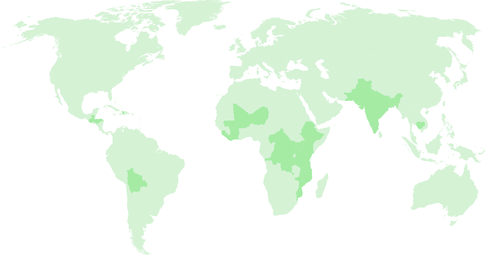

We invest the money we raise into organizations with years of experience to build sustainable, community-owned water projects around the world. Our team works closely to ensure that every dollar is accounted for and then provides reports back to our donors. Learn about our approach, the solutions we fund and our partners on the ground.
Learn about
Our Approach
Learn about
Our Solutions
Learn about
Our Partners
We're passionate about solving the water crisis in our lifetime, using 100% of all public donations to fund water projects, and proving where every dollar goes with photos and GPS coordinates. Here's the progress we've made since we started working in 2006.
Water projects funded ?
People will get clean water ?
Local partners ?
Countries
We fund water programs in 24 countries around the globe - in Africa, Asia, Central and South America. Water scarcity, poverty, political stability and strong partner organizations all play a part in where we choose to work. We focus on providing rural communities with their first access to clean water.
Our time in the field gives us a personal view on what it's like to get clean water for the first time. The mothers, children and communities that we’ve met inspire our ideas and, often times, solutions. Every one of them has a story worth sharing.
Meet
The 15-Year-Old President
Meet
The Well Doctor
Reed
Surviving in the Desert
We're not just about funding new wells, we're also taking care of the ones we've already built. This is how we ensure that our water projects continue to provide clean water to communities long after they are installed. Pipeline is a system of local leaders, innovative technology and trained mechanics all working together to keep water flowing at charity: water projects around the world.